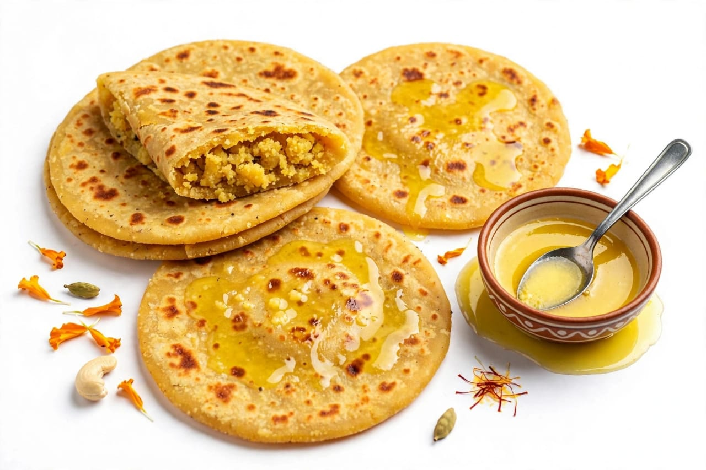
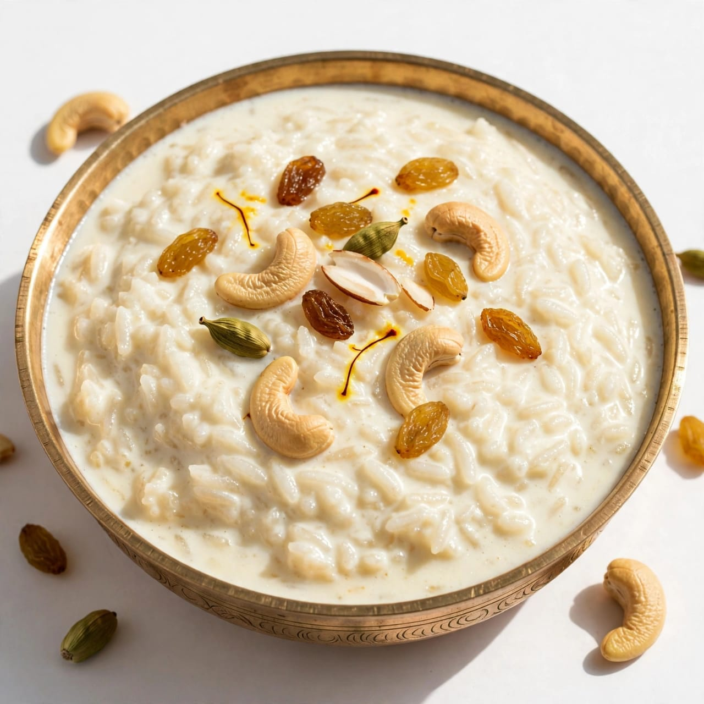

About Ugadi
Ugadi is an important festival celebrated in South India. It marks the beginning of a new year. Ugadi is mainly celebrated in Karnataka, Andhra Pradesh and Telangana. The festival is known by different names in different regions. In Karnataka, it is called Ugadi. The word Ugadi means the beginning of a new age. Ugadi is celebrated according to the Hindu lunar calendar. It usually falls in March or April. The festival represents a new beginning. People welcome the new year with happiness. Homes are cleaned before the festival. Houses are decorated with flowers and mango leaves. Mango leaf decorations are called toranas. People create beautiful rangoli at the entrance. Families wear new and traditional clothes. People wake up early on Ugadi morning. They take an oil bath as part of the tradition. People offer prayers to God. Special puja is performed in many homes. Temples are decorated for the festival. Families visit temples to seek blessings. Ugadi is a festival of hope and prosperity. People pray for happiness in the coming year. Panchanga is traditionally read on Ugadi. The Panchanga gives information about the coming year. Special foods are prepared for the festival. Ugadi Pachadi is an important traditional dish. It contains different tastes such as sweet and bitter. The different tastes represent different experiences of life. Sweet taste represents happiness. Bitter taste represents difficulties. Sour taste represents challenges. Spicy taste represents excitement. Salt represents interest in life. Raw mango represents surprise. Ugadi teaches people to accept all experiences. It reminds us that life has both happiness and difficulties. People share festival food with relatives. Friends and family exchange greetings. Ugadi creates a joyful atmosphere.
Ugadi is celebrated with great enthusiasm in Karnataka. It is also an important festival in Andhra Pradesh and Telangana. The festival has religious and cultural importance. People decorate their homes before Ugadi. Mango leaves and flowers are used for decoration. Doorways are decorated with beautiful toranas. Rangoli designs are made in front of houses. People clean their homes as a symbol of a fresh start. New clothes are worn by many families. Traditional prayers are performed in the morning. People visit temples with their families. Special offerings are made to God. The Panchanga is read by priests or elders. It gives information about the new year. People listen to the predictions of the coming year. Ugadi Pachadi is prepared in many homes. It is made using several ingredients. Each ingredient represents a different taste of life. The dish gives an important message about life. People should accept both happiness and difficulties. Ugadi encourages positive thinking. It teaches people to face the future with courage. Families prepare many traditional dishes. Holige is a popular sweet prepared during Ugadi. Payasa is also prepared in many homes. Kosambari is another traditional dish. Festival meals are shared with family members. Guests are welcomed with food and happiness. People visit relatives and friends. They exchange Ugadi greetings. Children enjoy wearing new clothes. Cultural programs may be organized in some places. Traditional music may be played during celebrations. Temples may conduct special events. People pray for health and prosperity. Farmers also welcome the new agricultural season. Ugadi represents renewal and hope. It is a time to forget old worries. People look forward to a better year.
Ugadi is a colorful and meaningful festival. It celebrates the beginning of a new year. People welcome the new year with happiness. Homes are cleaned and decorated. Flowers and mango leaves add beauty to houses. Rangoli is made at the entrance. Families perform prayers together. People visit temples and seek blessings. Traditional foods are prepared for the festival. Ugadi Pachadi is an important part of the celebration. It teaches the different experiences of life. People share food with family and friends. New clothes are worn by many people. Greetings are exchanged among relatives. Ugadi promotes family unity. It also preserves traditional customs. The festival brings hope for the future. It encourages people to remain positive. Ugadi is a festival of peace and prosperity. It is celebrated with joy and devotion.
Special Foods

Ugadi Pachadi
A special dish made with different ingredients representing different tastes of life.

Holige
A traditional sweet flatbread prepared with a sweet filling.

Payasa
A traditional sweet dish prepared with milk, sugar and other ingredients.